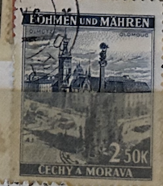
| SOURCE | TITLE| IMAGE MATCH | click to source page |
| HipStamp | Bohemia and Moravia #33 Single Used | Europe - Czech Republic, General Issue Stamp / HipStamp | 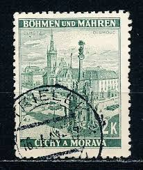 |
| eBay | Bohemia and Moravia, Scott 46, Kromeriz, 1940, used, 107902 | eBay | 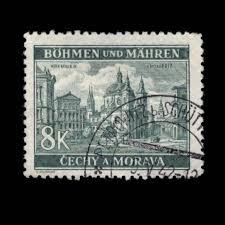 |
| eBay | BOHEMIA AND MORAVIA:1939 Local Motifs 2K (FBX) | eBay | 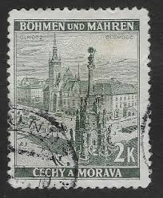 |
| eBay.de | Gestempelte Altsignatur-Briefmarken aus Böhmen & Mähren (bis 1945) online kaufen | eBay.de | 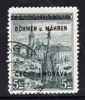 |
| eBay | Gestempelte Briefmarken aus Böhmen & Mähren (bis 1945) mit Bauwerks-Motiv online kaufen | eBay | 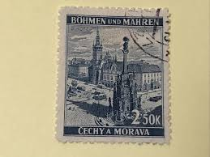 |
| Amazon.com | Amazon.com: Bohemia and Moravia 18 Stamp not testable fine Used/Cancelled 1939 Print Edition (Stamps for Collectors) : Toys & Games | 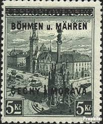 |
| eBay.de | Echte gestempelte ungeprüfte Briefmarken aus Böhmen & Mähren (bis 1945) online kaufen | eBay.de | 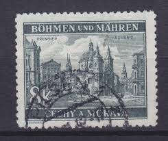 |
| Shopee Philippines | Old Stamps Of World War Ii Bohemia & Moravia | Shopee Philippines | 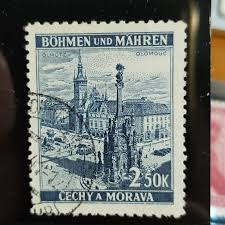 |
| PICRYL | 261 Protectorate of bohemia and moravia, Czechia Images: PICRYL - Public Domain Media Search Engine Public Domain Search | 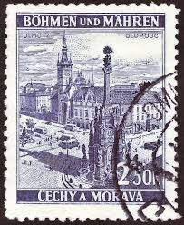 |
| Bridgeman Images | Image of Postage stamps, old Town Hall of Bonn, 1964, and postage | 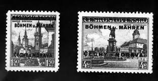 |
| Shutterstock | 1,404 1939 Stamp Royalty-Free Images, Stock Photos & Pictures | Shutterstock | 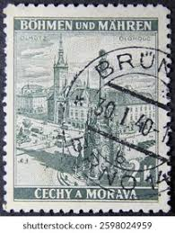 |
| Violity | Марка 1939 г. Богемия и Моравия. Ольмютц / Оломоуц Городские пейзажи. (113271197) - купити Violity | 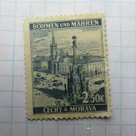 |
| eBay Australia | Bohemia and Moravia 32LW with blank unmounted mint / never hinged 1939 clear bra | eBay Australia | 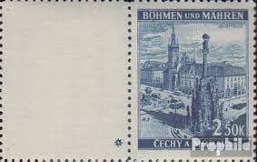 |
| iStock | Turkish Postage Stamp Stock Photo - Download Image Now - Postage Stamp, Silo, Ankara - Turkey - iStock | 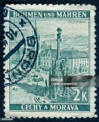 |
| Wikimedia.org | File:Stamp 1940 DRBM MiNr0058 mt B002a.jpg - Wikimedia Commons | 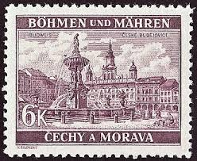 |
| eBay | BM Deutsches Reich/German Empire: Böhmen und Mähren Mi № 18 (MNH) 1939 CV €80+ | eBay | 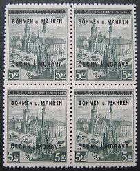 |
| eBay | Germany WW2 German B&M Buildings 8k Stamp WW2 ERA | eBay | 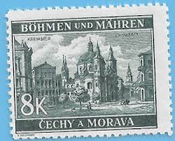 |
| Shutterstock | 25 Maehren Royalty-Free Images, Stock Photos & Pictures | Shutterstock | 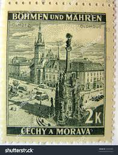 |
| Tradera | Se produkter som liknar Böhmen Mähren 1939 - 2,5 k. på Tradera (706587102) | 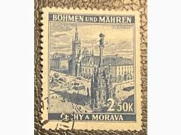 |
| eBay | Bohemia & Moravia 46 two stamps, MNH. Michel 59. Views 1940. Kromeriz. | eBay | 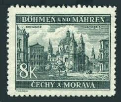 |
| PicClick | STAMP GERMANY BOHEMIA Czechoslovakia Mi 089-110,42 Sc 62-83,90 WWII Hitler MNG $8.95 - PicClick | 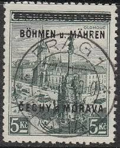 |
| Filatelie Pěnkava | Protektorát :: Protektorát :: Katalog :: Filatelie Pěnkava | 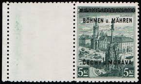 |
| Briefmarken - Münzen | Böhmen & Mähren - Briefmarken Dr. Rohde & Kornatz Gleichen | 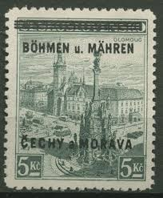 |
| eBay | Travelstamps: Germany Bohemia & Moravia Stamps 8k Mint MOGH | eBay | 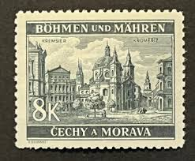 |
| Dreamstime.com | Wwii German Envelope Stock Photos - Free & Royalty-Free Stock Photos from Dreamstime | 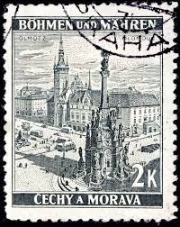 |
| Stamp Auction Network | Prices Realized | 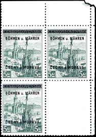 |
| PostBeeld.es | Sellos de Bohemia & Moravia - PostBeeld.es - Tienda Filatélica, colección de sellos | 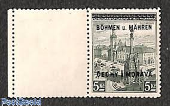 |
| eBay | Bohemia e Moravia 17 Francobolli non testabili usato 1939 Stampa edizi (10351446 | eBay | 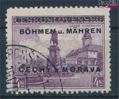 |
| PICRYL | 21 Overprints on stamps of the protectorate of bohemia and moravia Images: PICRYL - Public Domain Media Search Engine Public Domain Search | 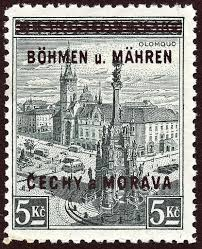 |
| Shutterstock | Kromeriz Czech Republic Mail Postage Stamps Stock-foto 22497994 | Shutterstock | 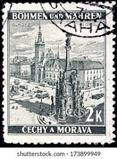 |
| Amazon.com | Amazon.com: Bohemia and Moravia 17 unmounted Mint/Never hinged ** MNH 1939 Print Edition (Stamps for Collectors) : Toys & Games | 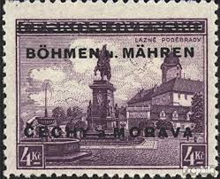 |
| Filatelie Česká Dáma | Přetisky Protektorát Čechy a Morava | 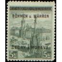 |
| Burda Auction | Přetisková emise / Protektorát ČaM / Filatelie / Písemná aukce | Burda Auction | 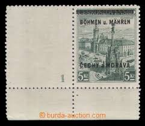 |
| eBay | Germany WW2 German B&M Buildings 2k Stamp MNH WW2 ERA #B | eBay | 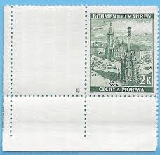 |
| HipStamp | Czechoslovakia Ger. Protectorate BOHEMIA & MORAVIA 1942 2k Used A25P41F19188 | Europe - Czech Republic, Stamp / HipStamp | 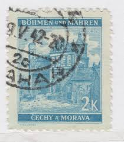 |
| Aukro.cz | 6040] Známka Protektorát Čechy a Morava Protektorát - přetiskové prov | Aukro | 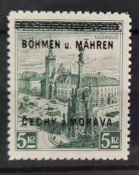 |
| eBay | Travelstamps: Germany Bohemia & Moravia Stamps 6k Mint MOGH | eBay | 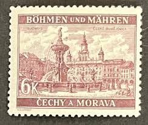 |
| Burda Auction | Complete auction / Philately / Public Auction 72 | Burda Auction (Filatelie Burda) | 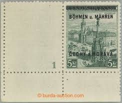 |
| eBay UK | BOHEMIA +MORAVIA 1939 2 Stamps. Good used (p424) | eBay UK | 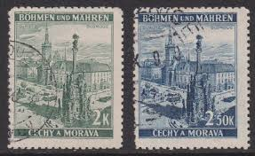 |
| Laribum | Böhmen & Mähren - Laribum Briefmarken, Ansichtskarten & Zubehör | 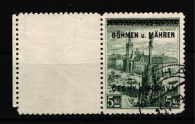 |
| eBay | Stamp Germany Bohemia Czechoslovakia Mi 017 Sc 017 1940 WWII 3rd Reich War Used | eBay | 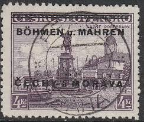 |
| Phila-Versand | BM14 - Michel 31 LW - Phila-Versand | 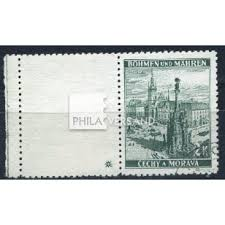 |
| Shutterstock | Czechoslovakia Circa 1940 Post Stamp Printed Stock Photo 323766719 | Shutterstock | 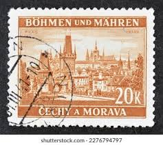 |
| eBay | BOHEMIA & MORAVIA SC# 38 1939 10K PRAGUE DEFINITIVE USED VF WWII ERA STAMP | eBay | 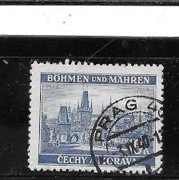 |
| Galéria Savaria | német bélyeg - Gyűjtemény | Galéria Savaria Archív Katalógus | 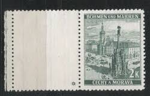 |
| Aukro | Protektorát ČaM Pof.18** rohový 4bl KDl, ZK, kat. 2.900 Kč viz foto !! | Aukro | 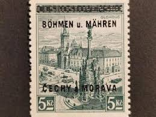 |
| Aukro | PROTEKTORÁT 34** SLEVA na doplnění | Aukro | 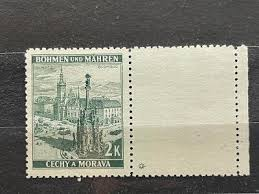 |
| Shutterstock | Czechoslovakia Mail Postage Stamps Stock Photo 23949889 | Shutterstock | 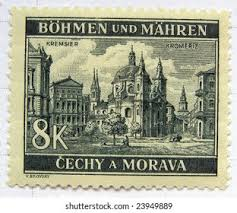 |
| Dreamstime.com | Zlin Circa Stock Photos - Free & Royalty-Free Stock Photos from Dreamstime | 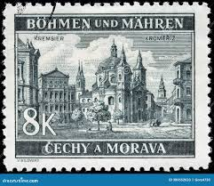 |
| Burda Auction | Přetisková emise / Protektorát ČaM / Filatelie / Písemná aukce | Burda Auction | |
| eBay | Briefmarken BÖHMEN MÄHREN CECHY MORAVA 8K postfrisch 2.2 | eBay | |
| Dreamstime.com | 165 Moravia Stamp Stock Photos - Free & Royalty-Free Stock Photos from Dreamstime | |
| Shutterstock | Czechoslovakia Postage Stamp: Over 9,848 Royalty-Free Licensable Stock Photos | Shutterstock | |
| Burda Auction | Complete auction / Philately / Online auction 75 | Burda Auction (Filatelie Burda) | |
| Zbieram temafila | Zbieram temafila | |
| eBay | Böhmen&Mähren 1939 MI 18LS signed Gilbert CANC VF | eBay | |
| eBay | Bohemia and Moravia, Scott 37, Prague, 1939-1940, used, 107899 | eBay | |
| Aukro.cz | ZNÁMKY - PROTEKTORÁT** - HVĚZDIČKY - 82 === | Aukro | |
| Aukro | POF. 18 - PŘETISK, OLOMOUC 5 K: KRAJOVÝ 4-BLOK (S8329) | Aukro |
{kind=link}